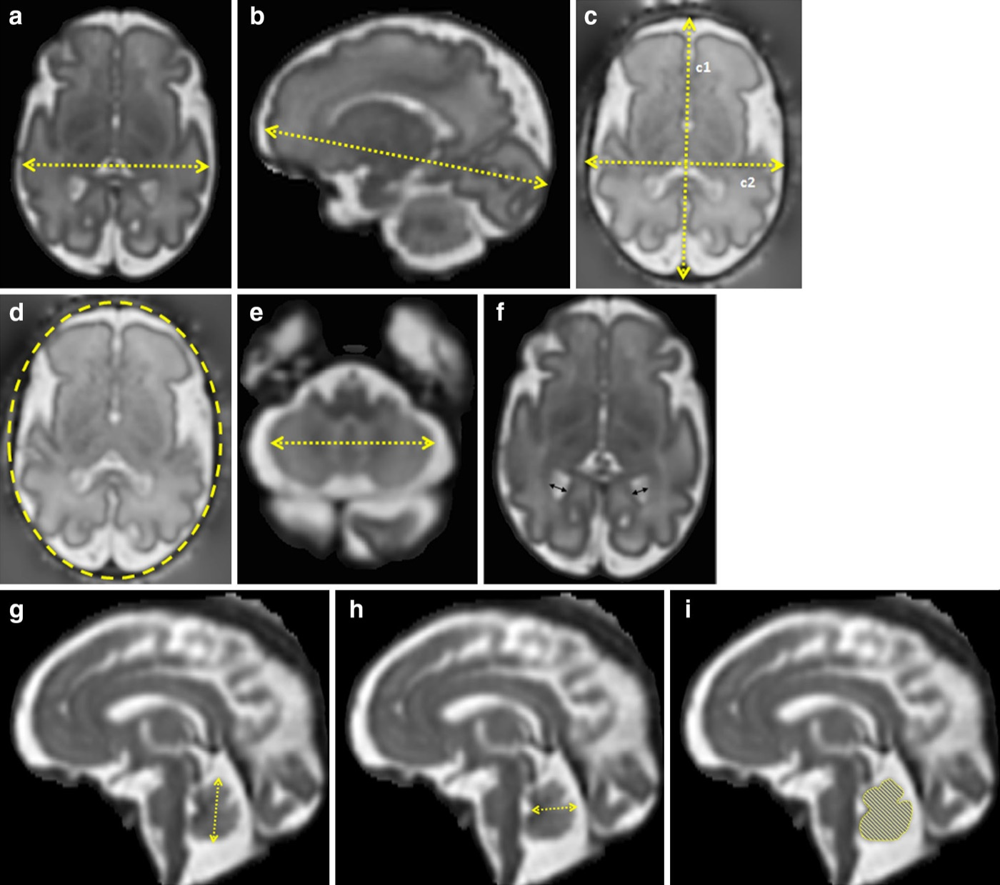

aDiametro biparietale encefalico — massima larghezza dell'encefalo, piano assiale
bLunghezza fronto-occipitale encefalica — piano sagittale, distanza tra i punti estremi del lobo frontale e occipitale
c1Diametro occipitofrontale cranico — massima distanza tra osso frontale e occipitale, cursori a metà dell'ipointensità ossea
c2Diametro biparietale cranico — massimo diametro della teca, tecnica outer edge to inner edge
dCirconferenza cranica con ellisse. Nel tool è calcolata come 1.62 × (BPD cranico + OFD cranico), il metodo su cui sono costruiti i centili
eDiametro cerebellare trasverso — massima distanza latero-laterale del cervelletto, piano assiale
fDiametro atriale — a livello dell'atrio, cursori sul margine interno della parete ventricolare, perpendicolari all'asse lungo del ventricolo
gAltezza del verme — massima lunghezza supero-inferiore, piano sagittale mediano
hLarghezza del verme — massima distanza tra fastigio e porzione posteriore del verme
iArea del verme — tracciamento a mano libera del contorno
Il CSF extracerebrale 2D non si misura direttamente: è calcolato come
BPD cranico − BPD encefalico (pannelli c2 − a).
Figura 3 da Kyriakopoulou V et al.,
Normative biometry of the fetal brain using magnetic resonance imaging,
Brain Struct Funct 2017;222(5):2295–2307, doi:10.1007/s00429-016-1342-6.
Riprodotta senza modifiche in quanto pubblicata Open Access con licenza
Creative Commons Attribution 4.0 International (CC BY 4.0).